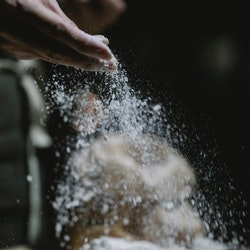
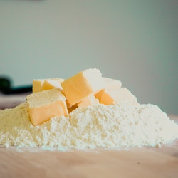
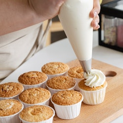
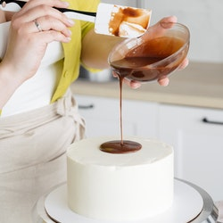

La cocina es nuestro lugar, nuestras creaciones son tus recetas..
tortas
En esta categoría les presento muchas recetas rápidas y deliciosas .Son una receta clásica de la pastelería francesa.

pasteleria
Sin duda debilidad de todo goloso, gran variedad de recetas de la pastelería nievel mundial.
panaderia
Nada mejor que el pan recién hecho, gran variedad de recetas locales en argentina e italianas.
postre y tartas
una receta rica, tarta dulce que esta compuesta por una base de masa frolla al chocolate rellena con ganache dechocolate amargo y ganache de chocolate blanco
 >
>
desayunos
Esta es un versión diferente a la clásica torta de ricota. Les comparto una receta que no tiene cocción en horno, que no tiene huevos pero si ricota y yogurth.
sabores italianos
El tiramisú es un postre de origen italiano. Entre los ingredientes de su receta, el que se destaca es el mascarpone y las vainillas.
